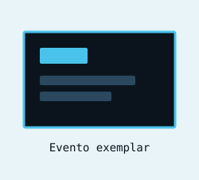
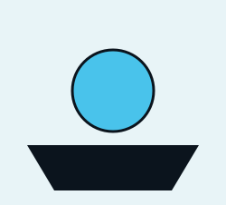
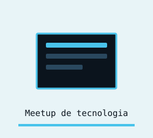

Seja bem-vindo(a) ao meu portfólio.
Sobre Mim
Sou estudante de Ciência da Computação e graduado em Desenvolvimento de Jogos Digitais, formação que me proporcionou uma visão generalista sobre o desenvolvimento de software. Atualmente, faço parte do Projeto Conecta 2030, uma iniciativa brasileira voltada ao desenvolvimento de um ecossistema tecnológico cooperativo para a segurança no trânsito, com foco na detecção de pedestres e ciclistas por meio de inteligência artificial, conectividade 5G e gêmeos digitais.
Tenho interesse em estar sempre adquirindo novos conhecimentos e ampliando meu repertório profissional e pessoal. Acredito que grandes desafios nos levam a alcançar nosso potencial máximo e considero que estar constantemente aprendendo é fundamental para o desenvolvimento profissional.
Objetivos
Meu objetivo é continuar evoluindo na área de tecnologia, aprofundando meus conhecimentos e aplicando-os em projetos que gerem impacto positivo e resolvam problemas do mundo real.
Quero me dedicar especialmente a compreender melhor as melhores práticas de desenvolvimento de software, desde a concepção até a entrega, participando de projetos que envolvam dados, automação e soluções tecnológicas inovadoras.


